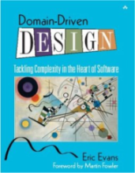

Jdon Framework is a DDD( Domain-Driven Design ) + DCI + Domain Events(Event Sourcing/CQRS) framework for java, The domain model that being in-memeory will concurrently publish domain events to the consumers, so we can build a CQRS or EDA application, its event engineer is from Disruptor that be recommended by LMAX Architecture wriiten by Martin Fowler. (Nothing Blocks)
Domain-driven design (DDD) is an approach to developing software for complex needs by deeply connecting the implementation to an evolving model of the core business concepts. details.

CQRS: Command-query Responsibility Segregation It's a pattern that I first heard described by Greg Young. At its heart is a simple notion that you can use a different model to update information than the model you use to read information. details.
Domain Event: Captures the memory of something interesting which affects the domain. details, see How to create fully encapsulated Domain Models
With JdonFramework you can easily develope a Event Sourcing and CQRS system.
DCI:Data Context and Interactions, in JdonFramework, event publisher is a Role, and sending event/message is interactions of the Role, in a DCI context, the Role will be assigned(Mixin) to data model, so the injected data model can directly publish events to the consumers.
Domain Events(Event Sourcing) for Evans DDD :
Real domain logic is in the Domain Model,
Outside the domain are these adapters, that listen to messages sent by
the domain. For instance, the domain could ‘broadcast’ a message(Domain Events) that a
new domain object has been created. An appropriate listener receives this
message and calls a method on a persistence service. This service knows
how to store the object in the database.
Key Features:
-
Domain-Driven Development, supports in memory model, does the injection of the business logic methods into the domain objects. supports DCI.
-
Event Sourcing:Never blocks ,Nothing blocks, concurrent programming; Event-driven Architecture(EDA) :asynchronous ,concurrency pattern, lazy load
- DI and AOP framework, POJO autowiring that implements Dependency Injection, and all components can be replaced, even include the framework itself. introduce any pojo as a inteceptor.
- Command Query Responsibility Segregation(CQRS/CQS) , support the default implementations for CRUD and auto paginator for query of large datas .
- Improve performance of the framework and its applications by plug-in cache.
- be easily integration with Spring framework.
Jdon Framework = DDD + Domain Events(CQRS)+ Ioc/DI + AOP + CRUD + Cache
Reference:
Blog
API
History
 163.com
163.com